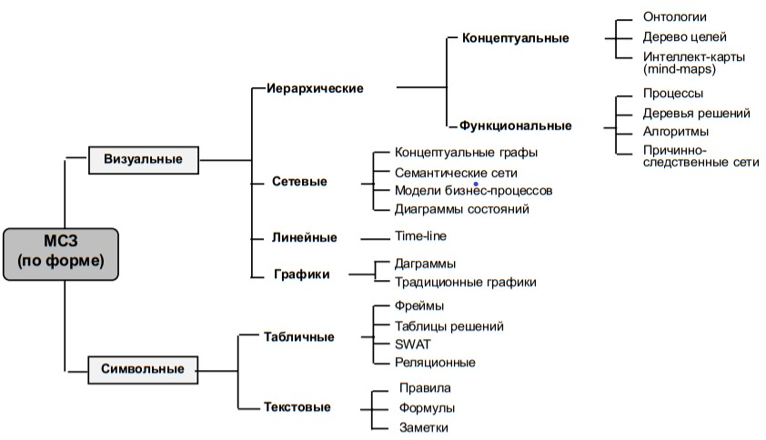
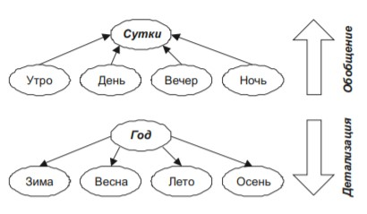
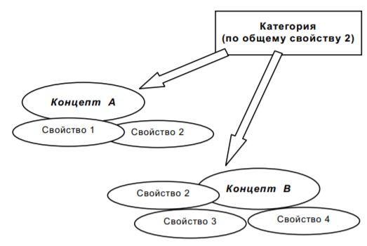
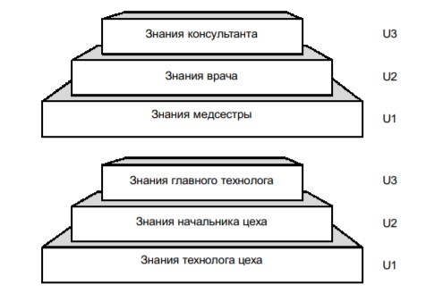

Лекция№5 "Структурирование знаний"
Разделение стадий извлечения и структурирования знаний является весьма условным, поскольку хороший инженер по знаниям, уже извлекая знания, начинает работу по структурированию и формированию поля знаний. В данном параграфе рассмотрен ряд различных подходов, предложена классификация методов, а также новая методология, позволяющая провести стадию структурирования независимо от последующей программной реализации, опираясь на достижения в области разработки сложных систем.
Стадия концептуального анализа, или структурирования знаний, традиционно является (наряду со стадией извлечения) узким местом в жизненном цикле разработки интеллектуальных систем. Методология структурирования близка к современной теории больших систем, или сложных систем, где акцент ставится на стадии проектирования. Большой вклад в эту теорию внесли классики объектно-ориентированного анализа.
Разработку интеллектуальных систем с уверенностью можно отнести к данному классу задал, поскольку они обладают основными признаками сложности (иерархия понятий, виутриалемеитные и межалементные связи и пр.). Сложность проектирования ИС определяется в основном сложностью предметных областей и управления процессом разработки, а также сложностью обеспечения гибкости конечного программного продукта и описания поведения отдельных подсистем.
Среди первых сторонников исследований по теории систем наиболее заметными были Берталаифи, Раппопорт и Боулдинг. Аналогичные концепции, но связанные не с общесистемными исследованиями, а рассматривающие информационные процессы в системах, таких как связь и управление, положили начало кибернетике как самостоятельной науке. Этот подход был существенно поддержан работами Шеннона по математическому моделированию понятия информации.
Позднее, в 1960-х гг., было сделано несколько попыток сформулировать и развить математические теории систем высокого уровня общности. Существенный вклад в математическую теорию систем и основы структурирования внесли отечественные исследователи Н. Я. Моисеев, В. М. Глушков, А. Г. Ивахненко , Д. А. Поспелов и другие. Системный анализ тесно переплетается с теорией систем и включает совокупность методов, ориентированных на исследование н моделирование сложных систем — технических, экономических, экологических и т. п. Данное пособие ориентировано на работу со знаниями, поэтому не включа-ет математический аппарат структурирования и моделирования систем, ограничиваясь эмпирическими методами.
Достаточно условно позволим себе разделить все методы структурирования на визуальные и символьные.
5.1.1 Символьные методы
Символьные методы чаще применяются в хорошо структурированных предметных областях, где имеется большая вариация методов, обусловленная сложной спецификой каждой из областей, потому и предлагающей свои методы и подходы. Однако более универсальны графические, или визуальные, подходы как менее формальные, наглядные и простые.Рисунок включает далеко не полный список методов, который практически является открытым в части конкретных техник структурирования.
В этом параграфе мы попытаемся обобщить процесс формализации и структурирования, а также довести его до практических рекомендаций.
5.1.2 Текстовые методы
Текстовые методы являются достаточно традиционными, внешне простыми и часто не вызывают вопросов. Рассмотрим их последовательно. В действительности, формулирование словесных правил требует неявного, но весьма трудоемкого составления таблиц решений, н в некоторого смысле может быть отнесено к табличны м методам.
Что касается формул, то применение математического аппарата возможно только в “жестких” хорошо структурированных ПО, которые не являются интересными для интеллектуальных систем, ориентированных на “мягкие” области.

Фактически для баз знаний интеллектуальных систем формулы малоприменимы. Но уже простейшее реферирование текста требует частичного применения техник извлечения звание е серьезных аналитических навыков а лингвистических способностей. Мы предлагаем назвать этот прием системно-аналитическим редактированием (САР) В основу САР положен принцип: Выделить главное а выкинуть балласт.
5.1.3 Табличные методы
Таблачиые методы требуют двумериой сесгематезацив, т. е. разбаеная на группы, подгруппы и иные категории. При этом таблицы могут быть .плоскими., где столбцы а строки внутри себя равноправны. как, например, в реляционной базе данных, а могут быть стратифицированы, подразумевая неявную ала явную иерархию. Понятно, что плоские таблицы составлять легче, хотя любой архитектор БД знает, насколько это творческий процесс, требующий серьезной аналитической работы, т.к. выявление атрибутов суть извлечение и структурирование знаний.
Однако методы разработки БД хорошо описаны, в то время как формализация званий по-прежнему делается методом ад нос (т. е. применительно к случаю).
5.1.4 Объектно-структурный анализ
Существующие подходы к проектированию сложных систем можно разделить на два больших класса:
В структурном анализе разработано большое число выразительных средств для проектирования, в том числе графических: диаграммы потоков данных (DFD — data-flow diagrams), структурированные словари (тезаурусы), языки спецификации систем, таблицы решений, стрелочные диаграммы «объект — связь» (ERD entity-relationship diagrams), диаграммы переходов (состояний), деревья целей, блок-схемы алгоритмов (в нотации Насси-Шнейдермана, Гамильтона-Зельдина, Фестля и др.), средства управления проектом диаграммы Ганта и др.) модели окружения. Множественность средств и их некоторая избыточность объясняется тем, что каждая предметная область, используя структурный подход как универсальное средство моделирования, вводила свою терминологию, наиболее подходящую для отражения специфики конкретной проблемы. Поскольку инженерия знаний имеет дело с широким классом «мягких» предметных областей (ПО), встает задача разработки достаточно и универсального языка структурирования. Объектный (объектно-ориентированный) подход (ООП), возникший как технология программирования больших программных продуктов, основан на следующих основных элементарных понятиях:
ООП имеет свою систему условных обозначений и предлагает богатый набор логических и физических моделей для проектирования систем высокой степени сложности. При этом системы хорошо структурированы, что порождает легкость их модификации.
Широкое распространение объектно-ориентированных языков программирования, например, С++, CLOS, Smalltalk успешно демонстрирует жизнеспособность и перспективность этого подхода.
5.1.5 Визуальные методы
На практике используются более сотни методов визуального структурирования — от традиционных к и-или я графов, сетей Петри, диаграмм бизнес-процессов до модных «стратегических» карт, лучевых схем-пауков и каузальных цепей. Такое многообразие обусловлено существенными различиями в природе, особенностями и свойствами знаний различных предметных областей. Сегодня любая попытка перечисления методов визуализации информации с целью структурирования практически обречена на провал. Всегда можно найти новый метод, не вошедший в список.
Хороший аналитик должен владеть широкой палитрой методов, всякий раз подбирая наиболее адекватный рассматриваемой предметной области. Естественным желанием является стремление разработать хотя бы простейшую классификацию и навести порядок в этом изобилии методов.
Их подход внешне выглядит систематическим, напоминая таблицу Менделеева, однако, по сути, он просто описывает методы по нескольким важным признакам:
Последний признак требует пояснений. Под дихотомией дивергентное/конвергентное мышление» понимается разница в конкретном (конвергентном) и креативном (дивергентном) способах мышления.
5.1.6 Простейший алгоритм
В качестве простейшего прагматического подхода к форми-рованию поля знаний начинающему инженеру по знаниям можно предложить следующий алгоритм для чайников:
5.1.7 Специальные приемы структурирования
Используя представленный на рисинке алгоритм, инженер по знаниям может испытывать необходимость в применении специальных методов структурирования на разных шагах алгоритма. При этом, естественно, для таких простых и очевидных шагов, как определение входных и выходных понятий или составление словаря, никаких искусственных методов предлагаться не будет.
а) Выявление объектов, понятий и их атрибутов
Понятие, или концепт, — это обобщение предметов некоторого класса по их специфическим признакам. Обобщенность является сквозной характеристикой всех когнитивных психических структур, начиная с простейших сенсорных образов. Так, понятие автомобилья объединяет множество различных предметов, но все они имеют четыре колеса, двигатель и массу других деталей, позволяющих перевозить на них грузы и людей. Существует ряд методов выявления понятий предмеnной области в общем словаре терминов, который составлен на основании сеансов извлечения знаний. При этом важно выявление не только самих понятий, но и их признаков.
Возвращаясь к терминологии, введенной в гл. 3, на этом этапе определяются также интенсионалы и экстенсионалы понятий предметной области. Интенсионал очерчивает понятие через взаимосвязь значимых признаков, а экстенсионал — через перечисление конкретных экземпляров объекта.
Если задача выделения реальных объектов А связана только с наблюдательностью и лингвистическими способностями эксперта и инженера по знаниям, то определение метапонятий В требует от них умения проводить операции обобщения и классификации, которые никогда не считались тривиальными.
Д. А. Поспелов предложил ряд подходов к созданию основ теории обобщения и классификации применительно к ситуационному управлению и искусственному интеллекту в целом, а также выделил ряд особенностей задач формирования понятий. Среди них особое место занимает выявление прагматически значимых признаков для формирования понятий, способствующих решению задачи.
Сложность заключается в том, что для многих понятий практически невозможно однозначно определить их признаки, это связано с различными формами репрезентации понятий в памяти человека.
Все методы выявления понятий мы разделили на 2 группы:
б) Выявление связей между понятиями
Концепты не существуют сами по себе, они включены в общую понятийную структуру с помощью отношений. Выявление связей между понятиями при разработке баз знаний доставляет инженеру по знаниям немало проблем. То, что знания в памяти — это некоторые связные структуры, а не отдельные фрагменты, общеизвестно и очевидно. Тем не менее основной упор в существующих моделях представления знаний делается на понятия, а связи вводят весьма примитивные (в основном причинно-следственные).
В последних работах по теории ИИ все больше внимания уделяется взаимосвязанности структур знаний. Так, введено понятие сценария (script) как некоторой структуры представления знаний. Основу сценария составляет КОП (Концептуальная Организация Памяти) и метаКОПы — некоторые обобщающие структуры.
Сценарии, в свою очередь, делятся на фрагменты, или сцены (chunks). Связи между фрагментами — временные или пространственные, внутри фрагмента — самые различные: ситуативные, ассоциативные, функциональные и т. д.
Все методы выявления таких связей можно разделить на две группы:
Неформальные методы выявления связей придумывает инженер по знаниям для того, чтобы вынудить эксперта указать явные и неявные связи между понятиями. Наиболее распространенным является метод сортировка карточек в группы, широко применяемый и для формирования понятий. Другим неформальным методом является построение замкнутых кривых. В этом случае эксперта просят обвести замкнутой кривой связанные друг с другом понятия. Этот метод может быть реализован как на бумаге, так и на экране дисплея. В этом случае можно говорить о привлечении элементов когнитивной графики.
в) Методы выделения метапонятий и детализация понятий (пирамида знаний)
Процесс образования метапонятий, или категорий, относится к достаточно сложным когнитивным функциям, требующих безусловно дивергентного (креативного) мышления и лингвистических способностей. Простейшие категории образуются из составных частей. Тут схема обобщения и детализации тривиальна и основана на отношении часть - целое», то в реальных предметных областях даже такая задача может оказаться весьма трудоемкой. При этом независимо от того, формальными или неформальными методами были выявлены понятия или детали понятий, присвоение им имен, или их интерпретация, - всегда неформальный процесс, в котором инженер по знаниям просит эксперта дать название некоторой группе понятий или отдельных признаков.

Это не всегда удается. Так, в системе АВТАНТЕСТ при образовании метапонятий, полученных методами кластерного анализа, интерпретация заняла несколько месяцев и не может считаться удовлетворительной. Это связано с тем, что формальные методы иногда выделяют искусственные концепты, в то время как неформальные - обычно практически используемые и потому легко узнаваемые понятия.
Считается, что категории в основном образуются на основе общности признаков. Например, если у нас есть список из 5 объектов (кукла, мяч, кубики, игрушечный автомобиль, плюшевый мишка) и мы выделили группу признаков (цвет, цена, материал, целевая возрастная категория, целевая гендерная категория), то возможными метаконцептами, или категориями, могут стать:

Методы построения пирамиды знаний обязательно включают использование наглядного материала - рисунков, схем, кубиков. Уровни пирамиды чаще возникают в сознании инженера по знаниям именно как некоторые образы.
Построение пирамиды знаний может быть основано и на естественной иерархии предметной области, например, связанной с организационной структурой предприятия или с уровнем компетентности специалистов.

г) Методы определения отношений
Отношения, или поименованные связи, существенно влияют на структуру знаний.
Указывается на наличие более 200 базовых видов различных отношений, существующих между понятиями. Следует только подчеркнуть, что помимо универсальных отношений (пространственных, временных, причинно-следственных) существуют еще и специфические отношения, присущие той или иной предметной области.
Интересные возможности структурирования знаний добавляют системы когнитивной графики. Так, в системе OPAL эксперт может манипулировать на экране дисплея изображениями простейших понятий и строить схемы лечения заболеваний, обозная отношения явными линиями, которые затем именуются. Предлагаемая в данном пособии методология структурирования опирается на современные представления о структуре человеческой памяти и формах репрезентации информации в ней.
Скудность методов структурирования объясняется тем, что методологическая база инженерии знаний только закладывается, а большинство инженеров по знаниям проводит концептуализацию, руководствуясь наиболее дорогими и неэффективными способами - "проб и ошибок" и "по наитию", т. е. исходя из соображений здравого смысла.